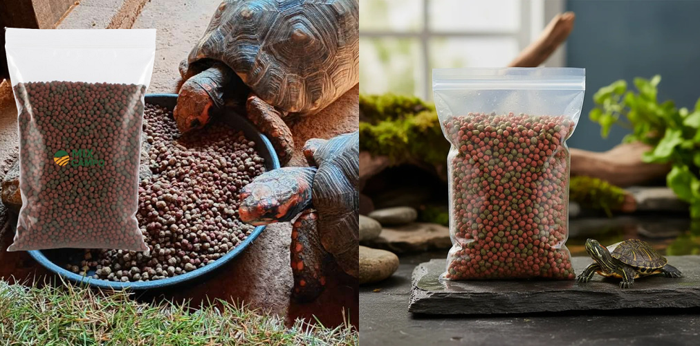

Ração para Tartaruga Aquática e Terrestre, Jabuti e Tigre D'água / Red

A ração extrusada Mix Campo é um alimento completo e balanceado, ideal para jabutis, tartarugas aquáticas e terrestres, tigre-d'água, iguanas e outros répteis. Sua fórmula combina ingredientes de origem vegetal e animal, garantindo nutrição adequada e alta aceitação.
Produzida com frutas, vegetais, insetos e minhocas, auxilia no crescimento, fortalecimento da carapaça e na saúde geral dos animais. O processo de extrusão proporciona melhor digestão e aproveitamento dos nutrientes.
Benefícios
- Alimentação completa e balanceada
- Com frutas, vegetais, insetos e minhocas
- Alta digestibilidade
- Excelente aceitação (alta palatabilidade)
- Auxilia no crescimento e fortalecimento da carapaça
- Indicado para répteis aquáticos e terrestres
Espécies Indicadas
- Jabutis (piranga e tinga)
- Tartarugas terrestres
- Tartarugas aquáticas
- Tigre-d'água
- Iguanas
- Outros répteis com dieta semelhante
Mix Campo, ração Mix Campo, produtos Mix Campo, alimentação para peixes Mix Campo